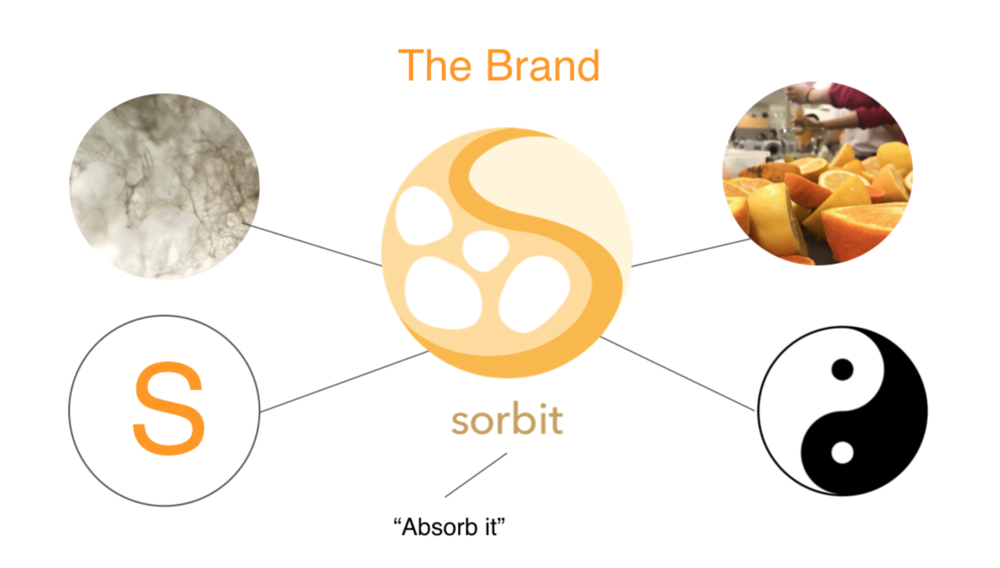

Sorbit's Website
Poster For Exhibition | Adobe Illustrator
Logo Design | Adobe Illustrator
Biodesign Challenge is a worldwide competition that offers students opportunities to envision the future with biotechnology. My teammates and I have had the honor to present our product -- Sorbit biodegradable diaper at New York MoMA, representing UC Davis.
Biodesign Challenge Official Website
Exhibition Mockup | SketchUp
Exhibition
As the designer of the Sorbit team, I design the brand, poster, website and exhibition. It was a great opportunity to collaborate with science students and make graphics that help everyone to understand complicated science ideas.
Our team won the Runner-Up & Outstanding Science Awards at Biodesign Challenge, and have continued the project as a future start-up company